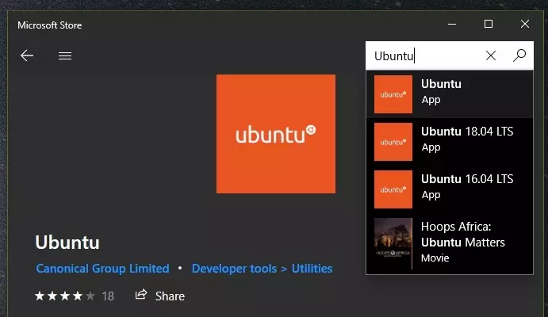
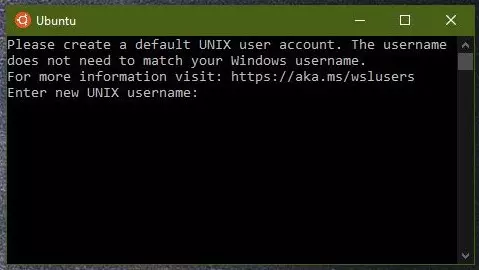

Step 1: Make sure that Windows is up-to-date.
Install all updates available in Windows Updates (Settings → Update & Security).Make sure that at least Build 16215 is installed. You can check your OS build in Settings → System → About.
Step 2: Install Windows Subsystem for Linux
Windows Subsystem for Linux is available as Windows Feature. Please go to Control Panel → Programs → Turn Windows features on or off. You need to have Administrator rights to enter Windows Features. Enable in this window the Windows Subsystem for Linux and press OK. Windows will asks to restart your computer when finished.

Step 3: Install a Linux distribution
A Linux distribution can be installed using Microsoft Store. The most convenient solution is usually Ubuntu. Install either by clicking here or go to Microsoft Store → Search → Ubuntu. Possibly, Windows asks for Microsoft credentials (sometimes even twice, both for downloading and installing). You can just close this window.
Step 4: Set-up of Linux distribution
Please open the just installed app now. Some last installing is usually done at this moment. Usually, this last for at most one or two minutes. When done, Ubuntu will ask for a username. Note that this username can only contain lower alphabetical characters. Subsequently, Ubuntu will ask for a password. Type the password. Note that altough you do not see your typed characters, the system is recording them! Confirm your password with Enter.
Step 5: Install g++
Run the following code to install g++. This needs to be done only once. Note that you need to type in your password after each command and need to confirm the installation by pressing
y.
sudo apt update
sudo apt install g++

Step 6: Locate your script
It is now time to find your earlier made .cc (or .cpp) programs. You can find your drives mounted on your Windows by first changing directory to /mnt. Type cd /mnt and then ls. Typically, you will find now a c and d directory. Now enter cd Users and then ls. Find your username and cd to that directory. Most students store their .cc (or .cpp) programs in either Documents, Onedrive or Desktop. You can use pwd to find the current directory.
Step 7: Compile
It is time to compile your .cc files! Issue g++ -Wall -Wextra -o program program.cc to compile program.cc to program. Note that -W and -o are flags, which determine the warnings you get and where the output is stored, respecitvely.
Step 8: Execute
You can now execute your program by issuing ./program.
Questions?
Don't hesitate to e-mail me or ask at the practical sessions of the course "Programmeermethoden".
Code editor
You can use any code editor for making your .cc files. My personal favourite is Visual Studio code.